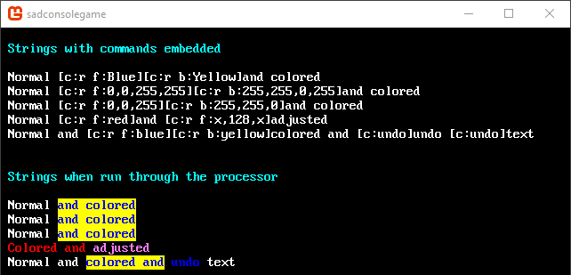

String parser built-in commands and syntax
SadConsole provides 6 commands by default. A command is built with this string format: [c:{command} {parameters}]. The [c: text starts the command sequence. The sequence ends when ] is encountered. If the command is invalid for some reason, it will not be processed and the text of the command will show up in the string. Once a command is created in the string, it is put on a stack and applied to each character encountered. Most commands can be applied for a specific count of characters, but otherwise apply until the end of the string. There is a special command, [c:undo] which stops the last command added to the stack of commands.
Some commands have optional or mandatory parameters. There is a space character between the command and the parameters.
| Command | Format | Description |
|---|---|---|
| r,recolor | [c:r f|b:color[:count]] |
Recolor the foreground or background |
| m,mirror | [c:m 0|1|2|None|FlipHorizontally|FlipVertically[:count]] |
Set SpriteEffect (mirroring) |
| u,undo | [c:undo [count:f|b|g|e|m|a]] |
Remove the last command on the command stack |
| b,blink | [c:b [count:speed]] |
Blinks a set of characters |
| g,grad | [c:g f|b:color[:color]:count] |
Applies a gradient across a set of characters |
| sg,sglyph | [c:sg glyph index[:count]] |
Sets the glyph for the count of characters |
Examples
Here are some example strings.
Set foreground to Color.Blue and background to Color.Yellow
"Normal [c:r f:Blue][c:r b:Yellow]and colored"Set foreground to RGBA and background to RGBA
"Normal [c:r f:0,0,255,255][c:r b:255,255,0,255]and colored"Set foreground to RGB and background to RGB. Alpha 255 assumed
"Normal [c:r f:0,0,255][c:r b:255,255,0]and colored"Set foreground to red but adjust only the blue color channel after
"Normal [c:r f:red]and [c:r f:x,128,x]adjusted"Remove last two commands at different spots
"Normal and [c:r f:blue][c:r b:yellow]colored and [c:undo]undo [c:undo]text"
Here is the code that would print these strings:
static void Init()
{
int row = 1;
SadConsole.Global.CurrentScreen.Print(1, row++, new ColoredString("[c:r f:Aqua]Strings with commands embedded"));
row++;
SadConsole.Global.CurrentScreen.Print(1, row++, "Normal [c:r f:Blue][c:r b:Yellow]and colored");
SadConsole.Global.CurrentScreen.Print(1, row++, "Normal [c:r f:0,0,255,255][c:r b:255,255,0,255]and colored");
SadConsole.Global.CurrentScreen.Print(1, row++, "Normal [c:r f:0,0,255][c:r b:255,255,0]and colored");
SadConsole.Global.CurrentScreen.Print(1, row++, "Normal [c:r f:red]and [c:r f:x,128,x]adjusted");
SadConsole.Global.CurrentScreen.Print(1, row++, "Normal and [c:r f:blue][c:r b:yellow]colored and [c:undo]undo [c:undo]text");
row += 2;
SadConsole.Global.CurrentScreen.UsePrintProcessor = true;
SadConsole.Global.CurrentScreen.Print(1, row++, "[c:r f:Aqua]Strings when run through the processor");
row++;
SadConsole.Global.CurrentScreen.Print(1, row++, "Normal [c:r f:Blue][c:r b:Yellow]and colored");
SadConsole.Global.CurrentScreen.Print(1, row++, "Normal [c:r f:0,0,255,255][c:r b:255,255,0,255]and colored");
SadConsole.Global.CurrentScreen.Print(1, row++, "Normal [c:r f:0,0,255][c:r b:255,255,0]and colored");
SadConsole.Global.CurrentScreen.Print(1, row++, "[c:r f:red]Colored and [c:r f:x,128,x]adjusted");
SadConsole.Global.CurrentScreen.Print(1, row++, "Normal and [c:r f:blue][c:r b:yellow]colored and[c:undo] undo [c:undo]text");
}
The above code results in the following console.

Command: Recolor
Syntax: [c:r|recolor f|b:color[:count]]
| Parameter Position | Optional | Description |
|---|---|---|
| 1 | False | Picks color area. f = foreground b = background |
| 2 | False | Chooses the color to use. See color parameters down below for more information. |
| 3 | True | Amount of characters to affect. If omitted, goes on indefinitely. |
Examples
| String | Description |
|---|---|
[c:r f:blue] |
Sets the foreground to blue |
[c:r f:x,200,x] |
Sets the foreground (r,g,b) green channel to 200, and does not change red and blue |
[c:r b:yellow:5] |
Sets the background to yellow for 5 characters |
Command: Mirror
Syntax: [c:m 0|1|2|None|FlipHorizontally|FlipVertically[:count]]
| Parameter Position | Optional | Description |
|---|---|---|
| 1 | False | Mirror type 0 or None = Do not mirror 1 or FlipHorizontally = Mirror horizontal 2 or FlipVertically = Mirror vertical |
| 2 | True | Amount of characters to affect. If omitted, goes on indefinitely. |
Examples
| String | Description |
|---|---|
[c:m 0] |
Sets the mirror to None. |
[c:m FlipVertically] |
Sets the mirror to vertical. |
[c:m 2] |
Sets the mirror to vertical. |
[c:m 1:3] |
Sets the mirror to horizontal for 3 characters. |
Command: Undo
Syntax: [c:undo [count:f|b|g|e|m|a]]
| Parameter Position | Optional | Description |
|---|---|---|
| 1 | True | Count of items to undo. |
| 2 | False* | f = undo foreground b = undo background g = undo glyph e = undo cell effect m = undo mirror a = undo previous item (default when parameter 1 is omitted) |
*Parameter 2 is required if parameter 1 is provided.
Examples
| String | Description |
|---|---|
[c:u] |
Remove the last command, no matter the type. |
[c:u 2:f] |
Removes the last two foreground commands. |
[c:u 99:a] |
Most likely will remove every command. |
Command: Blink
Syntax: [c:b [count:speed]
| Parameter Position | Optional | Description |
|---|---|---|
| 1 | True | Count of glyphs to blink. |
| 2 | False* | Speed of the blink. Default is 0.35 in seconds. |
*Parameter 2 is required if parameter 1 is provided.
Examples
| String | Description |
|---|---|
[c:b] |
Blinks the rest of the string. |
[c:b 2:0.35] |
Blinks the next two characters at the default speed. |
Command: Gradient
Syntax: [c:g f|b:color[:color]:count]
| Parameter Position | Optional | Description |
|---|---|---|
| 1 | False | f = apply gradient to the foreground b = apply gradient to the background |
| 2 | False | The color step to apply to the gradient. Repeat as many times as needed. See color parameters down below for more information. |
| Last | False | How many characters for the gradient to apply to |
Examples
| String | Description |
|---|---|
[c:g f:LimeGreen:Orange:9] |
Applies a Lime->Orange gradient to the foreground of the next 9 characters. |
[c:g b:0,0,0:Red:Yellow:Red:Black:15] |
Applies a Black->Red->Yellow->Red->Black gradient to the background of the next 15 characters. |
Command: Set Glyph
This command sets the next single glyph in the string to the specified glyph index.
Syntax: [c:sg glyph index[:count]]
| Parameter Position | Optional | Description |
|---|---|---|
| 1 | False | The glyph index to apply. |
| 2 | True | The count of characters to apply the glyph to. If omitted, defaults to 1. Use * to indicate the rest of the string. |
Examples
| String | Description |
|---|---|
[c:sg 67] |
Sets the next 1 characters to the letter C |
[c:sg 32:*] |
Sets the rest of the string to the space character |
[c:sg 120:5] |
Sets the next 5 characters to x |
Color parameters
If a command uses a color parameter, it can be specified in the following ways.
rgb
red,green,blue as a byte value.rgba
red,green,blue,alpha as a byte value.name
A named color from the MonoGame Color type (supported in SFML)default
use the default color of the surface.
Tip
If you use the rgb or rgba color values, you can use x in place of any color channel to skip it and use the existing color channel on the surface.